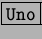
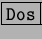
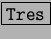
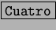

Next: Fondo de pantalla
Up: Configuración del entorno KDE
Previous: Configuración del tipo de
Índice General
Personalización del escritorio
Antes de seguir adelante, es conveniente aclarar el concepto de
``múltiples escritorios'', esta es una característica que proveen la
mayoría de los entornos de escritorio, en una misma sesión de X tener
varios escritorios, esto posibilita trabajar con más comodidad. KDE
por defecto tiene configurados 4 escritorios, en la barra de
herramientas se pueden observar los botones llamados 
  y , los que se utilizan para
acceder a dichos escritorios. También existe una forma de cambiar de
escritorios de una manera más directa: usando la combinación de
teclas Ctrl-F1 para el primero, Ctrl-F2 para el
segundo, etc. Estos escritorios múltiples le proveen al usuario más
espacio para colocar sus aplicaciones.
Subsecciones
Proyecto Cursos - LuCAS - http://lucas.hispalinux.es/htmls/cursos.html